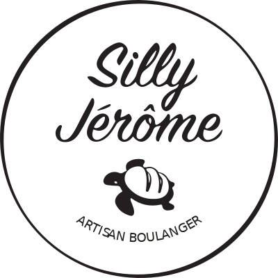
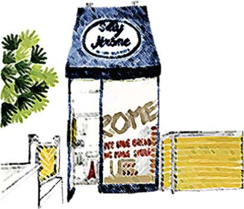

브랜드 스토리
실리제롬의 모든 빵은 거북이의 걸음과 같이 느릿느릿 발효하여
각 재료 본연의 맛에 충실한 정통 빵집입니다.
-
- Silly(어리석은) + Jerome(제롬이라는 이름)
- 실리제롬은 어리석은 제롬이라는 뜻으로, 실리제롬 로고에 있는 거북이가 ‘제롬’이라는 친구입니다. 제롬은 ‘빵이 좋아 본인의 등껍질을 빵과 바꿔먹는 빵에 환장한 친구’ 입니다. 또한, ‘느리게, 천천히, 빠르게 지나가는 유행과는 먼, 오래갈 수 있는’ 이라는 뜻의 철학을 담고 있습니다. 이처럼 실리제롬의 모든 빵은 거북이의 걸음과 같이 느릿느릿 발효하여 각 재료 본연의 맛에 충실한 정통 빵집입니다.
- We bake fresh bread. We make you smile.
- 실리제롬은 여러분의 건강을 우선으로 합니다. 모든 제품은 매장에서 직접 기르는 천연 발효종을 사용하여 매일 아침 생산하며, 당일 판매를 원칙으로 합니다. 모든 빵에는 신안 천일염을 사용하며 유화제, 안정제, 마가린 등 합성 첨가물을 넣지 않습니다. 하드 계열의 빵에는 버터, 설탕, 계란, 우유 등이 들어가지 않습니다. 제품 특성에 맞는 최상급 재료를 사용하여 장시간 자연 발효를 통해 빵을 만듭니다. 믿고 드셔도 됩니다.
 -
- 재료와 과정을 중요시하는 삼산동에만 있는 건강 빵집
- 실리제롬에선 제품의 특성에 맞는 최상급 재료를 사용하여 장시간 자연 발효를 통해 빵을 만듭니다. 유화제, 마가린, 색소 등 합성 첨가물 및 개량제, 냉동생지 사용을 하지 않습니다. 실리제롬에서는 매장에서 정성스레 키우고 있는 발효종을 이용하여 12시간 이상의 발효 시간을 통해 사워도우(Sourdough)를 만듭니다. 젖산과 초산이 활성화되어 나타나는 끝맛의 산미는 사워도우 고유의 특징입니다. 씹을수록 느껴지는 사워도우만의 독특한 풍미를 실리제롬에서 즐겨보세요.
거북이의 걸음 같이 느릿느릿 발효하여 각 재료 본연의 맛에 충실한 정통 빵집
